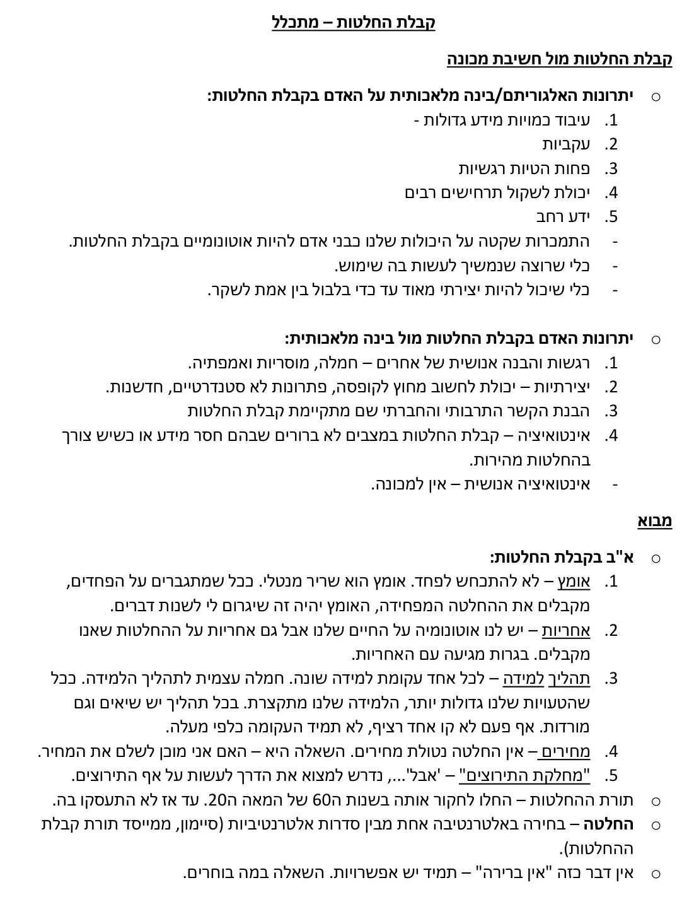
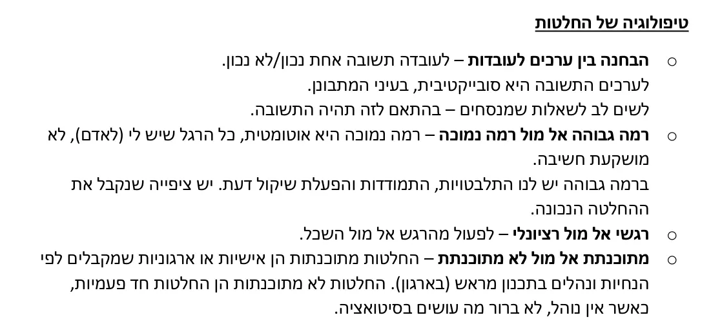
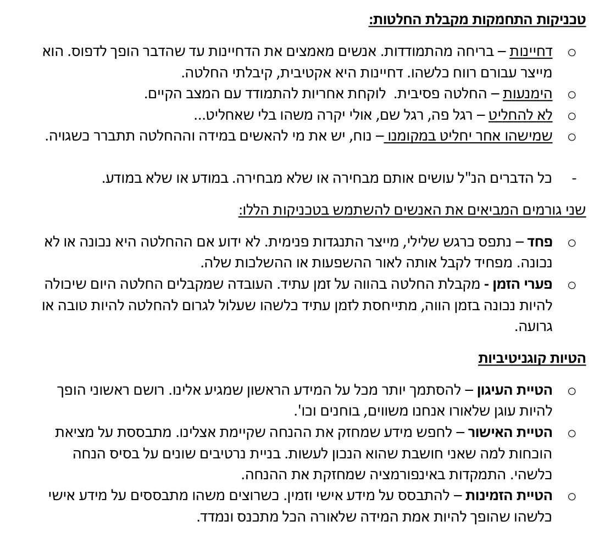
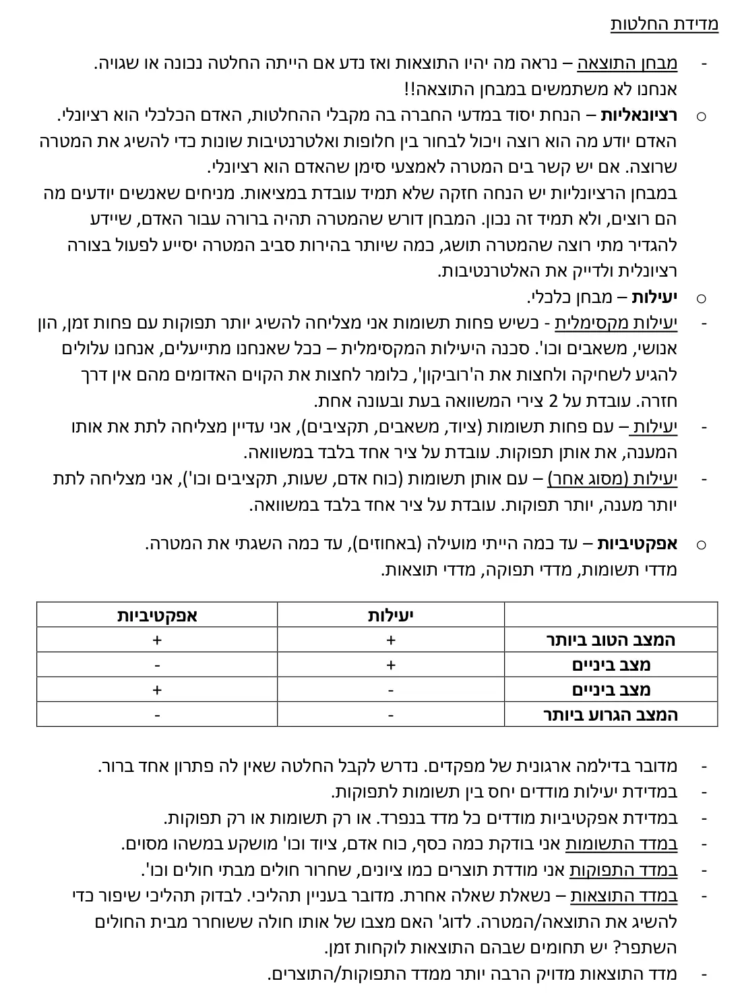
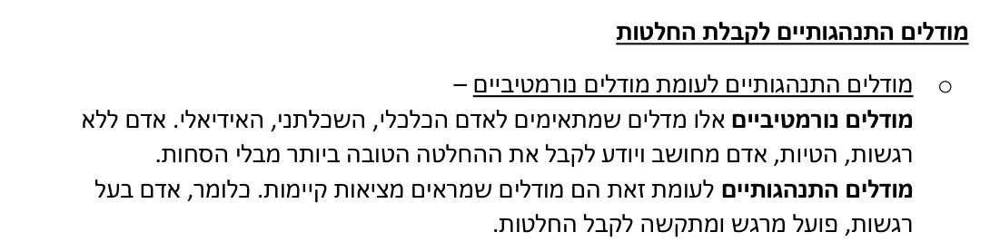
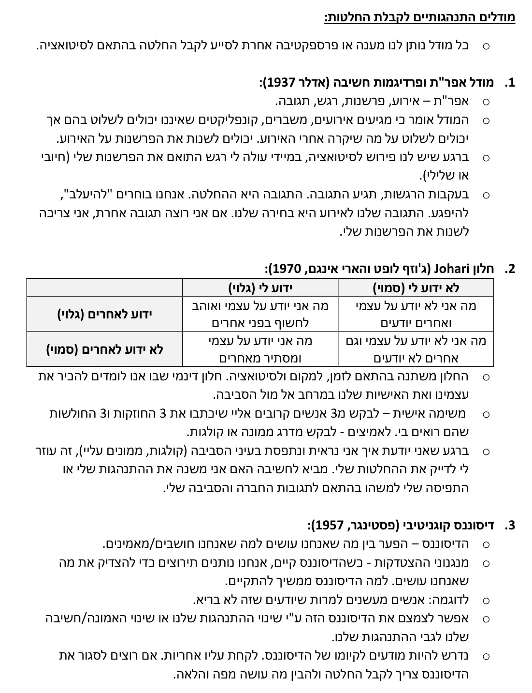
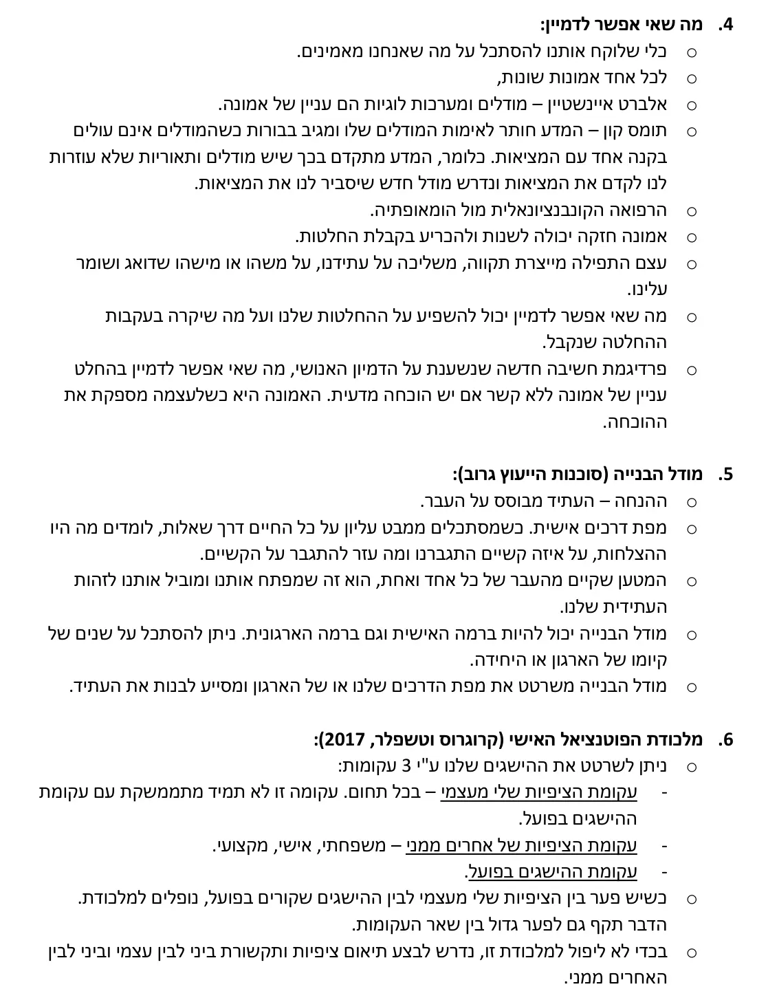
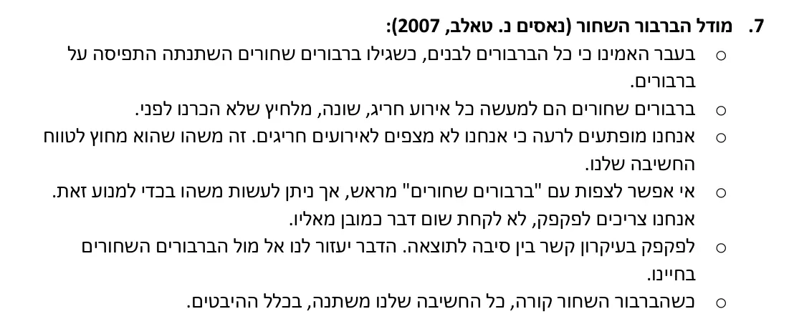

קבלת החלטות – שיעור 4
(המשך מודלים התנהגותיים לקבלת החלטות)
עיקרון פארטו (1923):
בתופעות רבות 80% מהפעילות מקורם ב20% מהגורמים הפעילים.
כלכלן איטלקי שפעל במאה ה20, במחקריו מצא עיקרון של 80% 20%.
אם אני רוצה להסביר 80% מתופעה מסוימת, מכל הגורמים והמשתנים שיכולות להסביר 80% מהתופעה, 20% הם הגורמים הפעילים, בהם אני צריכה להשקיע. ברגע שהבנתי מהם הגורמים הפעילים – פתרתי 80% מהבעיה.
סיבה שחוזרת על עצמה כמו למשל שילוט מתאים – זוהי סיבה שחוזרת על עצמה במרבית תאונות הדרכים. אם אשקיע בשילוט מתאים – אמנע את שיעור תאונות הדרכים ואפתור את רוב הבעיה שלי.
צריך לזהות את ה20%.
שיקול דעת מקצועי:
מה שמצופה בכל תפקיד – לא משנה התחום.
שני מקבלי החלטות שהכשרתם מקצועית וארוכה מאוד, אין ביטחון מלא שהאנשים הללו לא יטעו – אנליסטים ורופאים (מחקר ילדים וניתוח להוצאת שקדים).
הטיית שיעור הבסיס – משפיעה לרעה על שיקול הדעת שלנו. מצב שבו אנחנו שופטים דברים כדומים על בסיס של תכונות שטחיות. אנחנו עושים זאת כל הזמן.
אם עושים השוואות, צריך לקבל החלטות אחרות לחלוטין. לא להשוות את אותו אדם ביחס לאחרים הדומים לו.
שיקול הדעת המקצועי נבנה בהתאם להשוואות ונדרש להיזהר.
שיקול דעת בניהול הזמן (covey,2004):
להקדיש זמן לארבע הפעולות הבאות:
פעולות דחופות וחשובות
פעולות חשובות ולא דחופות
פעולות דחופות ולא חשובות
פעולות לא חשובות ולא דחופות
ככל שאשקיע יותר בפעולות חשובות ולא דחופות, אני מונעת מהפעולה החשובה להפוך לדחופה. זהו ניהול זמן נכון.
שיקול דעת מקצועי (Tichy ,Bennis, 2007):
בדקו אנשים בדרגים שונים, ראיינו אותם, עשו עליהם תצפיות ובדקו איך אותם אנשים בדרג סמכות בתוך הארגון מפעילים שיקול דעת מקצועי?
שני ממצאים לניסוי:
מהם הנושאים בהם נדרשת הפעלת שיקול דעת מקצועית? שלושה נושאים:
החלטות שנוגעות לאנשים – קידום, פיטורים, עבודת צוות וכו'.
אסטרטגיה – תוכניות עבודה אסטרטגיות.
ניהול משברים – היעדר כוח אדם, משבר תדמיתי, תקציבי ועוד.
אם נקבל החלטות שגויות לגבי אנשים – לא נוכל ליצור תוכניות עבודה אסטרטגיות ולא נדע לנהל משברים.
לקבל החלטות חשובות לגבי אנשים – החשוב ביותר.
איך למעשה להפעיל שיקול דעת מקצועי? איך לעשות את זה נכון?
שלושה שלבים:
שלב ההכנה – מצריך ראש גדול ופתוח. לקלוט אותות מהסביבה בתוך ומחוץ לארגון, לדעת לאיפה רוצים להגיע, מה העתיד אליו רוצים שהיחידה/הארגון יגיע, להיות מונעים מזה. דבר נוסף, לעשות הבחנה בין עיקר לטפל, לחתוך דרך מורכבות העניין. אם לא תהיה הפרדה, לא יינתן מענה לעיקר. לקבוע אבני דרך עיקריות. לגייס שותפים, בעלי עניין, לדאוג לדבר באותה השפה, לתמרץ ולהניע עובדים וכן לא להיות מקובע, לנצל רעיונות טובים מכל מקום.
שלב ההכרעה – קבלת החלטה ברורה – כן או לא ולדעת להסביר מדוע קיבלתי את החלטה זו.
שלב הביצוע – המנהלים צריכים להישאר מעורבים, לא מתערבים. לתת תמיכה, לבדוק מה קורה עם אבני הדרך שנקבעו, תקציבים, עמידה בלוחות זמנים וכן הזמנת משובים תוך כדי ולעשות התאמות נדרשות בהתאם.
החשוב ביותר הוא השלב הראשון – ההכנה.
תהליך הפעלת שיקול דעת מקצועי:
לחוש ולזהות – חושים מחודדים.
למסגר ולקרוא בשם – מסגור חשוב מאוד.
לגייס ולהיערך – לגייס משאבים ולהיערך לקראת קבלת ההחלטה. אם מתקשה לגייס משאבים, כוח אדם וכו' זה אומר שכנראה לא עשיתי נכון את השלב הקודם. לא גייסתי נכון ולא נערכתי נכון.
הכרעה – קבלת ההחלטה והסבר מדוע קיבלתי אותה.
נעשה שזה יקרה – לוודא שזה יקרה, על אף עיכובים. אם לא קורה כנראה שלא הסברתי דחיפות, לא הבנתי למה חשוב, לא עשיתי נכון את השלב הקודם.
למד והתאם את עצמך.
הטייס האוטומטי (תיאור מצב ולא מודל – ארנולד, 2018):
העדפות לא מודעות
יעילות מנטאלית
היעדר שליטה
היעדר כוונה מודעת
אנחנו לא חושבים על מה שאנחנו עושים.
היומיום שלנו מורכב מהרבה טייסים אוטומטיים. הטייס האוט' זה חזרתיות על אותן התנהגותיות.
החזרתיות נוחה. המוח עצלן ולא רוצה להתאמץ.
משתמשים בו כי זה עוזר לנו לייעל את השימוש במשאבים קוגניטיביים. באפס מאמץ.
מדובר בהרגל, הרבה פעמים לא מודעים לחזרתיות הזו ולא חושבים על זה.
המוח מתנגד לשינויים, הדרך להתגבר על הטייס אוט' עוברת דרך מיקרו החלטות.
מיקרו החלטות
החלטה קטנה מזערית שלא מפעילה את ההתנגדות של המוח. לא מפעילה כוח רצון. עוברת מתחת לרדאר של המוח.
קבלת החלטות – שיעור 5
רמת הפרט:
רגש, אמוציה ואינטואיציה – יש לכולנו ללא יוצא מן הכלל.
שילוב של טיפוס אינטואיטיבי, רציונלי, שונא סיכון, אוהב סיכון, אדיש לסיכון, מהמר.
תודעה:
התודעה "נעולה מאחורי סורג ובריח", היא מנהלת אותנו.
תודעה היא כל הדברים, התחושות, התפיסות שלנו. הרבה מהאופן שבו אנו נמצאים בזמן ומקום הוא עניין של תודעה.
מדובר בחוויה אישית.
כלל המושגים, התחושות והמחשבות של האדם.
כלל החוויות המודעות.
המסנן בתוך המוח (Reticular Activating System, 2021):
מערכת חיה, מתפקדת, של נוירונים שפרושה על כל המוח כמו רשת לשיער. המערכת עובדת כמסננת את כל המידע שמגיע אלינו למוח – ויזואלי, שמיעה, ריח וכו'.
איך המסנן נסתם?
ממחשבות, אמונות, חוויות מהעבר.
מה קורה כשהמסנן נסתם?
נשארים תקועים בעבר.
ממשיכים לחזור על אותם טעויות.
חושבים אותן מחשבות שליליות.
חיים בתודעה ישנה – זה מה שמנהל אותנו, מי שהייתי בעבר, מה שקרה אז.
מרגישים מחורבן.
תקועים באותם דפוסי קבלת החלטות.
תפקיד ה –RAS (המסנן בתוך המוח):
הוא מחליט איזה מידע נכנס לתודעה שלנו ואיזה מידע נשאר מחוצה לה.
הוא מפקח על 34 ג'יגה בייט ששל נתונים בכל יום (=3 שנות נתוני טלפון ב- 24 שעות!).
הוא חוסם 99% ממה שסובב אתכם מלהגיע אל התודעה שלכם.
אם הוא לא היה עושה זאת הראש היה מתפוצץ מרוב עומס מידע.
מה עובר תמיד את המסנן?
צליל שמכם כשקוראים בו.
כל דבר שמאיים על ביטחונכם או ביטחון יקירכם.
רמזים שבן/בת זוג מעוניינים בסקס.
כל דבר שהמסנן שלכם חושב שחשוב לכם (כל מחשבה שאתם חוזרים אליה או נושא שאתם מתמקדים בו המסנן יחשוב שהוא חשוב).
אפקט הציפיות:
הניסוי בהרווארד על עובדי ניקיון בבית מלון מ-2007 (Robson, 2022):
העבודה של עובדי ניקיון בבתי מלון מאומצת מבחינה גופנית אך מותירה בהם הרגשה שונה מאימון בחדר כושר.
כדי לשנות את תפיסותיהם החוקרים הסבירו להם שכמות האנרגיה שהוציאו במהלך השבוע בניקיון משתווה בקלות לרמת האנרגיה המומלצת באימון לשמירת בריאות טובה.
לאחר חודש גילו החוקרים שכושרם הגופני של עובדי הניקיון השתפר במידה ניכרת
חלו שינויים משמעותיים במדדי המשקל ולחץ הדם שלהם.
הציפיות שלהם השתנו, העובדה הביאה לכך שגם הפיזיולוגיה שלהם השתנתה. הם הסתכלו על העבודה שלהם בעיניים אחרות.
שינוי הציפיות משפיע גם על קבלת ההחלטות שלנו.
המחקר על סינדרום המוות הפתאומי בשינה בשנות ה- 70' ( Lester, 2009+ המחקר של שלי אדלר):
תעלומה: מדוע מהגרים שהגיעו מלאוס לארה"ב גברים בני 40-20 מתים בשנתם?
האמונה העממית שבלילה משוטט בעולם שד מרושע בשם "דאב-צוג". כשהוא מוצא קורבן הוא שוכב על גופו, משתק אותו, סותם את פיו עד שהקורבן לא יכול לנשום
בארה"ב אין שאמאן, אין טקסי קורבן - אין הגנה מפני השד.
הבהלה העמוקה מהשד הביאה להפרעה בקצב הלב וגרמה לדום לב.
אתגרים רגשיים:
ניהול כעסים.
לחץ ושחיקה.
ניהול פחדים.
מהו פחד? (אורלוף, 2009):
"תגובה רגשית על סכנה מדומה או אמיתית. מה שמאפיין פחד על כך צורותיו הוא ההרגשה שמשהו רע יקרה לכם".
טריגר פנימי שהמוח שלנו מסמן את הסיטואציה כמפחידה ומגדיר אותה כסיטואציה שיש בה סכנה. לא משנה אם מדובר בסכנה מוחשית או מדומיינת.
סכנות בפחד (שם):
התמכרות – אפשר להתמכר לפחד. אנשים חושפים את עצמם במודע לסיטואציות מפחידות. הם תחת השפעת אדרנלין, הערנות בשיאה. האדרנלין מהר מאוד יורד וכל מה שחווינו קודם מועצם. הגוף מותש. צריך להגדיל את רמת המינון של האדרנלין, כלומר לחפש משהו שהריגוש שאנו חווים בו הוא גבוה כדי שנחווה שוב את אותה עוצמת אדרנלין שאליה אפשר להימכר.
טשטוש דעת היפנוטי – מצב שיש ניתוק, קיפאון וכו'. קורה במצבים של פחד קיצוני. מצב שלא ניתן לחזות מראש. הטשטוש גורם לאדם להיות בחוסר תפקוד. החוויה הרגשית משתלטת עליו והוא לא מסוגל לבצע את מה שצריך.
מוות – פחד יכול להרוג (כמו תסמונת סינדרום המוות הפתאומי). יכול להוביל לשרשרת תגובות לא בשליטתנו שעלולות להוביל לדום לב, שבץ וכו'.
הביולוגיה של החלטות:
אונה שמאלית - חשיבה מודעת, לוגית, רציונאלית.
אונה ימנית - חשיבה לא מודעת, אינטואיטיבית, אמוציונאלית.
אנחנו משתמשים בשני החלקים של המוח אך לא תמיד בצורה מאוזנת. אצל כל אחד מאיתנו יש חלק דומיננטי יותר מהאחר.
המוח שלנו עובד בהצלבה.
קבלת החלטות – שיעור 6
הביולוגיה של החלטות:
אונה שמאלית - חשיבה מודעת, לוגית, רציונאלית.
אונה ימנית - חשיבה לא מודעת, אינטואיטיבית, אמוציונאלית.
אנחנו משתמשים בשני החלקים של המוח אך לא תמיד בצורה מאוזנת. אצל כל אחד מאיתנו יש חלק דומיננטי יותר מהאחר.
המוח שלנו עובד בהצלבה.
אם כותבים ביד ימין – האונה השמאלית דומיננטית יותר
אם כותבים ביד שמאל – האונה הימנית דומיננטית יותר.
אם יודעים לכתוב בשתי הידיים – האונה הימנית ושמאלית מאוזנות.
יש לזה השפעה בקבלת החלטות.
האונה הימנית אחראית על היצירתיות, התפתחות, חשיבה מחוץ לקופסה ועוד.
רגש והחלטות (המחקר של דמסיו, 1998):
דמסיו עבד עם אנשים פגועי מוח כתוצאה מתאונת דרכים.
במחקר נתן לאותם אנשים משימות פשוטות שמערבות רגש כמו למשל הציג תמונות קשות לצפייה ובחן את התגובה הרגשית. במקרה רגיל, התגובה היא מיידית כמו הסטת מבט, הבעת פנים של סלידה. פגועי המוח לא הגיבו כלל, כאילו ראו דף חלק.
לפגועי המוח מרכז הרגש נפגע "באג בתוכנה", התוכנה במוח מריצה פקודות. התוכנה לא מצליחה להתגבר על הפקודות. כלומר לא עוברת מפקודה לפקודה כמו מוח שמתפקד כרגיל. קשה להם לקבל החלטות פשוטות מה עושים במצב שבו נמצאים. הם בסוג של לימבו.
הממצא החשוב של דמסיו - רגש הוא קריטי! ההחלטות של כל אחד ואחת מערבות רגש. לא תמיד מודעים לעובדה אך בלי רגש אנחנו לא מסוגלים לקבל החלטה. רגש הוא חשוב לקבלת החלטות. כאשר המרכז נפגע, מדובר על נכות רצינית.
המודל הכפול (כהנמן ופרדריק, 2002):
מודל שנולד מהמון תצפיות ומחקרים שערכו כהנמן ופרדריק. התברר כי תהליך קבלת ההחלטות של כולנו מתחלק לשני חלקים:
מערכת אינטואיטיבית:
אוטומטי, מהיר, אסוציאטיבי, עמום, תכנים רגשיים, מוחשיים. כלומר, מערכת הפעלה שפועלת מאינטואיציה. לא ניתן לכבות או לפלטר אותה. משהו העלה לנו אינטואיציה שמשנה לנו את ההחלטה. המערכת פועלת בצורה אוטומטית ומהירה. היא עובדת על אסוציאציות
מערכת רציונאלית:
מבוקר, מאומץ, איטי, מודע, לפי כללים, תכנים מופשטים.
התהליך איטי ומבוקר. חושבים לפי כללים מסוימים, דורש מאמץ אינטלקטואלי ופיזיולוגי קשה. דורשת חשיבה לדברים שעושים בעת ובעונה אחת, התכנים מופשטים.
דוגמה למערכת הפעלה 1 – אינטואיטיבית (כהנמן, 2011):
מזהה חפץ אחד שמרוחק מאחר, מזהה עויינות בקול, משיבה על השאלה 2+2=?
דוגמה למערכת הפעלה 2 - רציונאלית:
ממלאת טופס, מחפשת אדם מסוים, בודקת תקיפות של טיעון לוגי.
יוריסטיקת רגש:
קיצור דרך. המוח מקבל בכל יום אלפי החלטות קטנות כגדולות ולכן משתמש בקיצור דרך שזהו למעשה הרגש. מערכת ההפעלה השנייה מקבלת את הרגשות כמו שהם, לא מבקרת אותם. מקבלת את הרגש כמובן מאליו. מערכת ההפעלה ה-2, האינטואיטיבית, לא תמיד מצליחה לזהות את הכישלונות והבאגים של מערכת ההפעלה ה-1, הרציונאלית. או שהיא משנה אותה או שהיא מקבלת אותה. היא מאשרת רגשות, לא מבקרת אותן. ניתן ללמוד לחזק את ההקשבה הפנימית לאינטואיציה שלנו.
איך רגש מעוות קבלת החלטות? (בבקוק ולוינשטיין, 1997):
רגש מעוות ע"י תחושת שליטה במצב, הגזמה בהערכת מצב והמעטה בהערכת סיכונים.
עיוורון קוגניטיבי – העובדה שאנחנו לא רואים את התמונה המלאה, המדויקת והשלמה. אם יתווסף הלחץ, העיוורון הקוגניטיבי יעבוד שעות נוספות. לדוג': שוטר שלא נתן עדות על אונס של צעירה בפארק. הוא טען כי רדף אחרי חשוד אחר, לא ראה את האונס שהיה בסמוך אליו.
הבסיס הביולוגי לקבה"ח (Simon, 1978, כהנמן וטברסקי, 1984):
רציונליות חסומה – היכולת שלנו לקבל החלטות רציונליות לא קיימת. מה שחוסם לנו את היכולת לנו לחשוב בצורה חדה ואנליטית ולקבל החלטות מדויקות אלא הרגשות שלנו מכל הסוגים – חיובים ושליליים כאחד.
אינטואיציה כיוריסטיקת שיפוט - האינטואיציה עוזרת לנו לקבל החלטות. קיצור דרך לשפוט סיטואציות, מצבים ואנשים ולקבל החלטות.
בעיית נגישות למידע – יש לנו בעיה להגיע למידע שיש לנו במוח. כמו למשל בלקאאוט במבחן. כאשר מפלס הלחץ והחרדה יירד, המחסום ייפתח ולאחר מכן המידע יגיע למוח ואתה תזכור את התשובה. פה, האינטואיציה עובדת שעות נוספות.
מה משפיע על נגישות למידע?
בולטות פיסית: גודל, צבע, מרחק, קול. הרושם הראשוני שלנו יושב על הפיזיות של הבן אדם. דבר זה גורם לאנשים באופן אינטואיטיבי לקבל החלטה ביחס לאנשים.
הערכה טבעית: דמיון, ערך רגשי.
הנגישות למידע עלולה להשפיע על החלטות פוליטיות, משפחתיות, מקצועיות ועוד.
ההחלטות לא תמיד מתקבלות בדעת. לפעמים עושים מניפולציות שגורמות לנו לקבל את ההחלטה.
נדרש לדבר את מערכת ההפעלה הראשונה שמדברת על הרגש – אינטואיטיבית.
(בולטות פיזית – לדבר על עגבניות)
כאן נגמר הסיכום. השיעור הבא יתווסף כאן כשהסיכום יעלה.